Sunt Iulian Panciu, content creator cu 7 ani de experiență și peste 40 de milioane de vizualizări. Produc conținut video pentru firme, de la idee până la publicare. Am lucrat cu Betano și 888.I'm Iulian Panciu, a content creator with 7 years of experience and 40+ million views. I produce video content for companies, from idea to publishing. I have worked with Betano and 888.
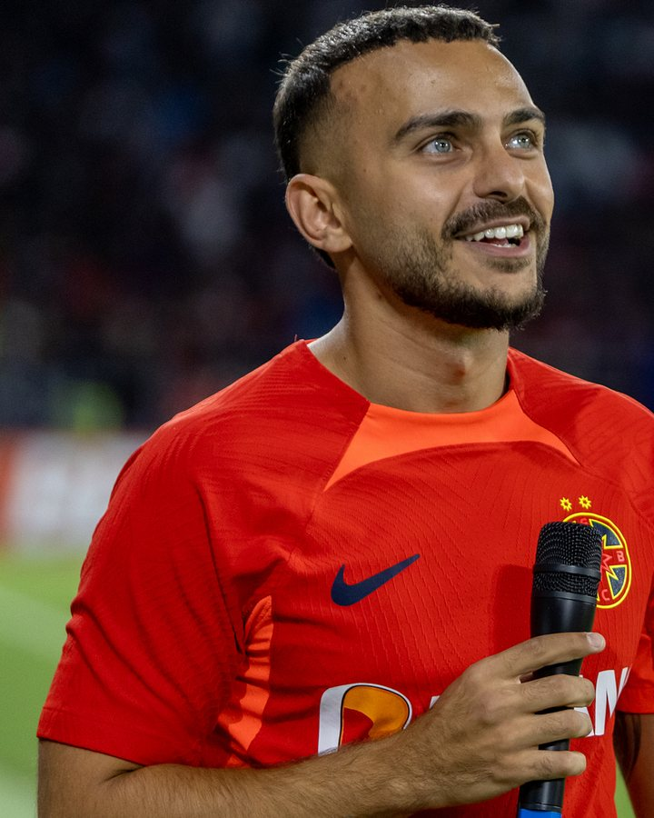
Construiesc pentru firma ta o serie de clipuri cu un fir clar. Tu aprobi, eu produc și public pe conturile tale.I build a video series for your company with a clear thread. You approve, I produce and publish on your accounts.
clipuri originale pe lunăoriginal videos a month
clipuri pe săptămână, constantvideos a week, consistently
de postări pe 4 platformeposts across 4 platforms
în română sau în englezăin Romanian or English
Găsim povestea firmei și o transformăm într-o serie.We find your company's story and turn it into a series.
Fiecare cifră are o sursă. Structura e testată pe publicul meu.Every number has a source. The structure is tested on my audience.
Filmare, montaj, subtitrare, imagini și sunet.Filming, editing, captions, imagery and sound.
Pe 4 platforme, în ritmul stabilit împreună.On 4 platforms, at the pace we agree.
Vlog de pe stadion: ce nu prinde televizorul, de la peluză la deplasări. Canalul ajunge la 47.400 de abonați.A stadium vlog: what TV misses, from the stands to away trips. The channel grows to 47,400 subscribers.
Reprezint FCSB, cea mai iubită echipă din România, în „Microbist de România”, show-ul TVR 1 filmat în Maldive. Termin pe locul 5. Tot atunci, invitat în podcastul Primul 11.I represent FCSB, Romania's most supported club, in “Microbist de România”, TVR 1's show filmed in the Maldives, and finish 5th. Same year: guest on the Primul 11 podcast.
Încep colaborarea cu Betano, unul dintre cei mai mari operatori de iGaming din lume. Invitat special la „Sport Replay”. Urmează peste 30 de producții pentru canalul Betano România, inclusiv o zi în cantonamentul FCSB cu Deian Sorescu.I start working with Betano, one of the world's largest iGaming operators. Special guest on “Sport Replay”, followed by 30+ productions for Betano Romania's channel, including a day at FCSB's training camp with Deian Sorescu.
12 producții în „Pase Pase Gol” pe canalul Theo Extra (350.678 de vizualizări), Fan Showdown la Andu. Absolvent al Influencer Accelerator, programul MOCAPP al lui Florin Grozea. În februarie 2024 am fost primul absolvent recrutat de Global Talent United, agenția Global Records.12 productions on “Pase Pase Gol” on Theo Extra's channel (350,678 views), Fan Showdown with Andu. Graduate of Influencer Accelerator, Florin Grozea's MOCAPP programme. In February 2024 I became the first graduate signed by Global Talent United, Global Records' agency.
329 de clipuri publicate într-un singur an. Formatele de poveste ajung constant la sute de mii de oameni.329 videos in a single year. Story formats consistently reach hundreds of thousands of people.
Seria de la Mondial pentru 888, invitat în studio la ProSport „EXCLUSIV FCSB”, un clip-poveste cu 799.000 de vizualizări. Acum produc același tip de conținut pentru alte firme.The World Cup series for 888, studio guest on ProSport's “EXCLUSIV FCSB”, a story video with 799,000 views. Now I produce the same kind of content for other companies.
Canalele mele sunt locul unde testez fiecare format înainte să-l produc pentru un client. Cifre publice din 7 noiembrie 2026.My channels are where I test every format before producing it for a client. Public figures as of 7 November 2026.
47.400 abonați · 1.345 clipuri · 11,1 mil. vizualizări47,400 subscribers · 1,345 videos · 11.1M views
29.587 urmăritori · 984 clipuri · 29,1 mil. vizualizări29,587 followers · 984 videos · 29.1M views
21.091 urmăritori21,091 followers
18.000+ urmăritori · 664 postări18,000+ followers · 664 posts
Unul dintre cei mai mari operatori de iGaming din lume, prezent în 20 de piețe reglementate, pe 4 continente. Pentru Betano am realizat peste 30 de producții și am prezentat pauzele meciurilor FCSB.One of the world's largest iGaming operators, present in 20 regulated markets on 4 continents. For Betano I made 30+ productions and hosted FCSB half-times.
ClientClientSeria de la Mondialul 2026, „Powered by 888”: 5 povești produse în 11 zile.The World Cup 2026 series, “Powered by 888”: 5 stories produced in 11 days.
AgențieAgencyRecrutat în februarie 2024 de agenția de talente a Global Records, primul din programul Influencer Accelerator. Scris în Pagina de Media, IQads și Revista Biz.Signed in February 2024 by Global Records' talent agency, the first from the Influencer Accelerator programme. Covered by Pagina de Media, IQads and Revista Biz.
TVAm reprezentat FCSB, cea mai iubită echipă din România (1 din 3 români, sondaj INSCOP 2024), în show-ul din 2021 filmat în Maldive. Locul 5.I represented FCSB, Romania's most supported club (1 in 3 Romanians, INSCOP 2024 poll), in the 2021 show filmed in the Maldives. 5th place.
EmisiuneShowInvitat în studio, alături de Alin Grigore și Robert Panduru (30.06.2026).Studio guest alongside Alin Grigore and Robert Panduru (30 June 2026).
Emisiune onlineOnline show12 producții, 350.678 de vizualizări, cu sponsor Betano.12 productions, 350,678 views, sponsored by Betano.
ProgramProgrammeAbsolvent al programului MOCAPP condus de Florin Grozea: 80 de ore de mentorat cu profesioniști din publicitate și social media.Graduate of the MOCAPP programme led by Florin Grozea: 80 hours of mentoring with advertising and social media professionals.
ColaborareCollabConcurent în Fan Showdown, pe canalul lui Andu (59.100 de abonați), cu Betano.Contestant in Fan Showdown on Andu's channel (59,100 subscribers), with Betano.
PodcastInvitat în podcastul Primul 11 și provocare de fotbal cu Iosif Cyd (54.400 de abonați).Guest on the Primul 11 podcast and a football challenge with Iosif Cyd (54,400 subscribers).
Vizualizări pe an. De la 0,8 milioane în 2021 la 9,8 milioane în 2025.Views per year. From 0.8 million in 2021 to 9.8 million in 2025.
* 2026: până la 7 noiembrie. 60 de clipuri au trecut de 100.000 de vizualizări.* 2026: through 7 November. 60 videos passed 100,000 views.
| AnYear | ClipuriVideos | VizualizăriViews |
|---|
Fiecare card duce la clipul original, cu cifrele la vedere.Every card links to the original, numbers in plain sight.
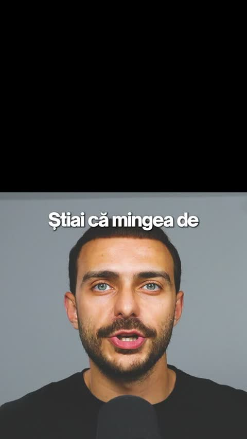
TikTok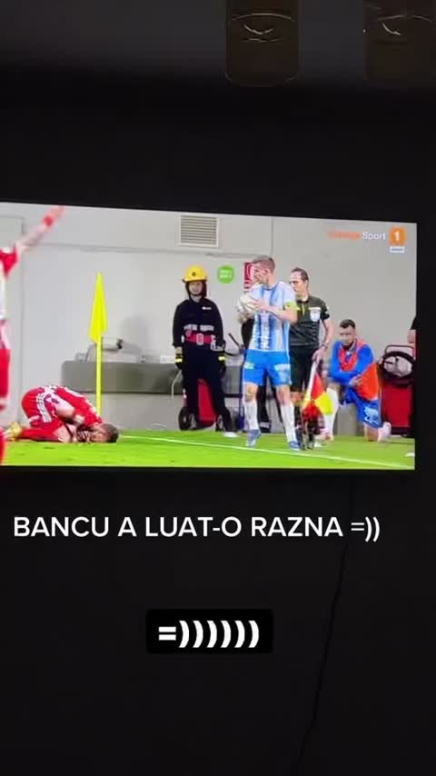
TikTok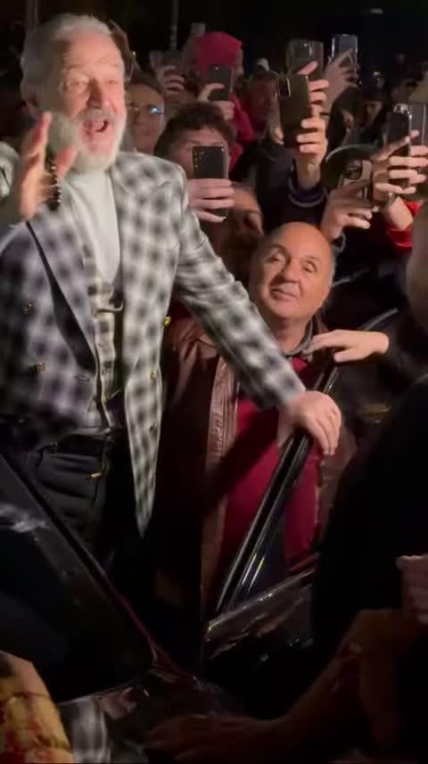
TikTok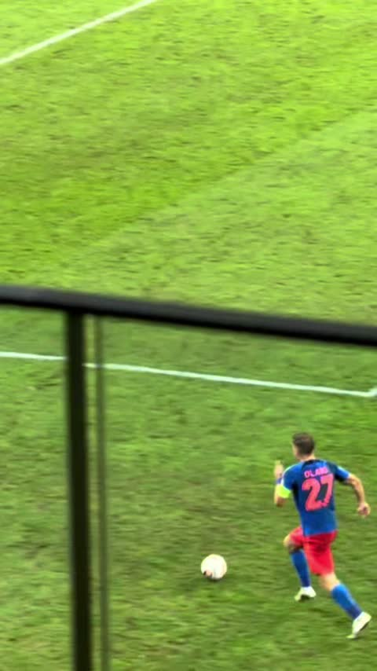
TikTok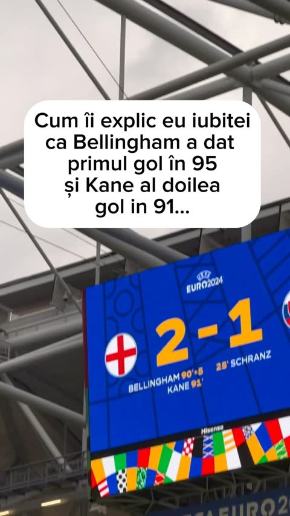
Instagram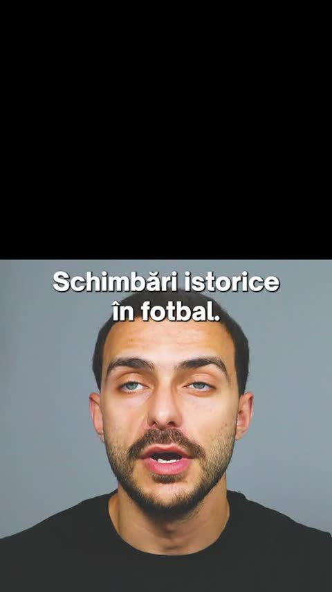
TikTok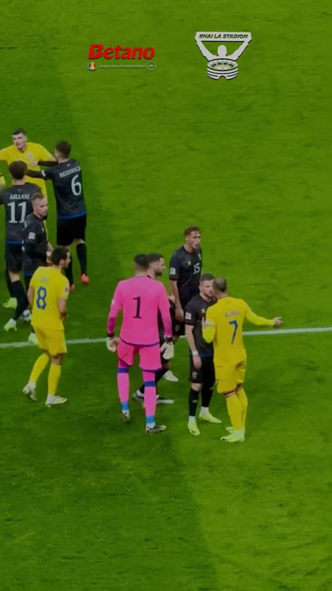
YouTube Shorts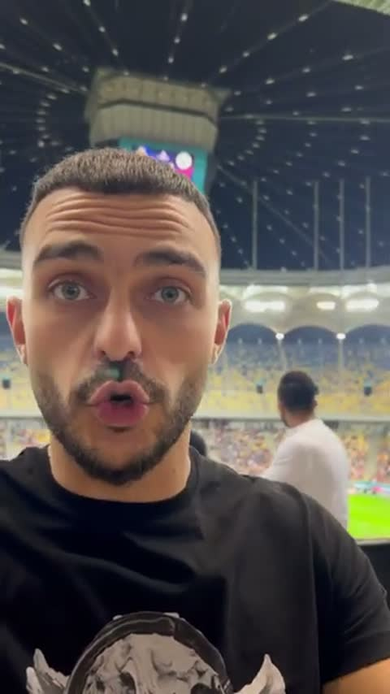
YouTube Shorts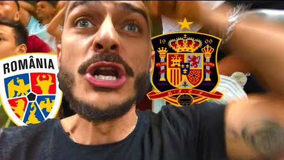
YouTube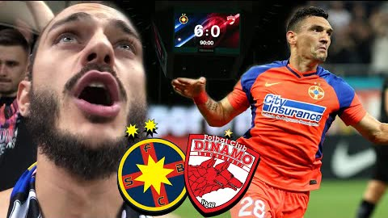
YouTube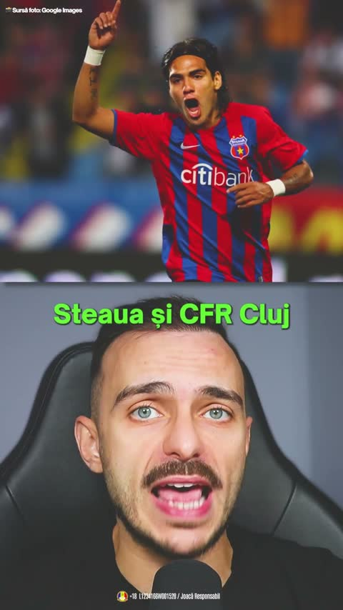
YouTube Shorts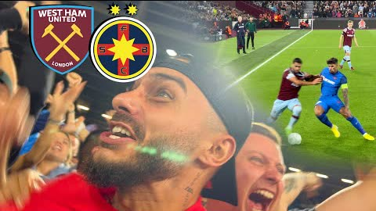
YouTubeCompletează formularul și revin cu o propunere de serie pentru firma ta.Fill in the form and I'll come back with a series proposal for your company.